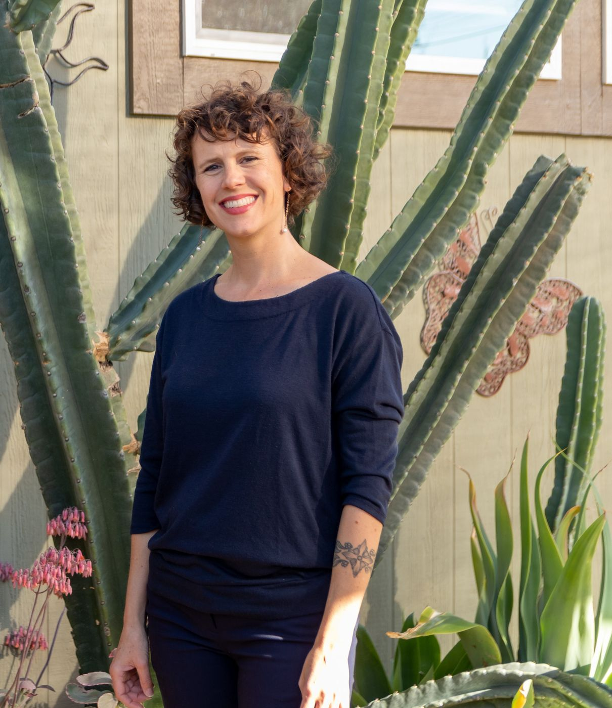
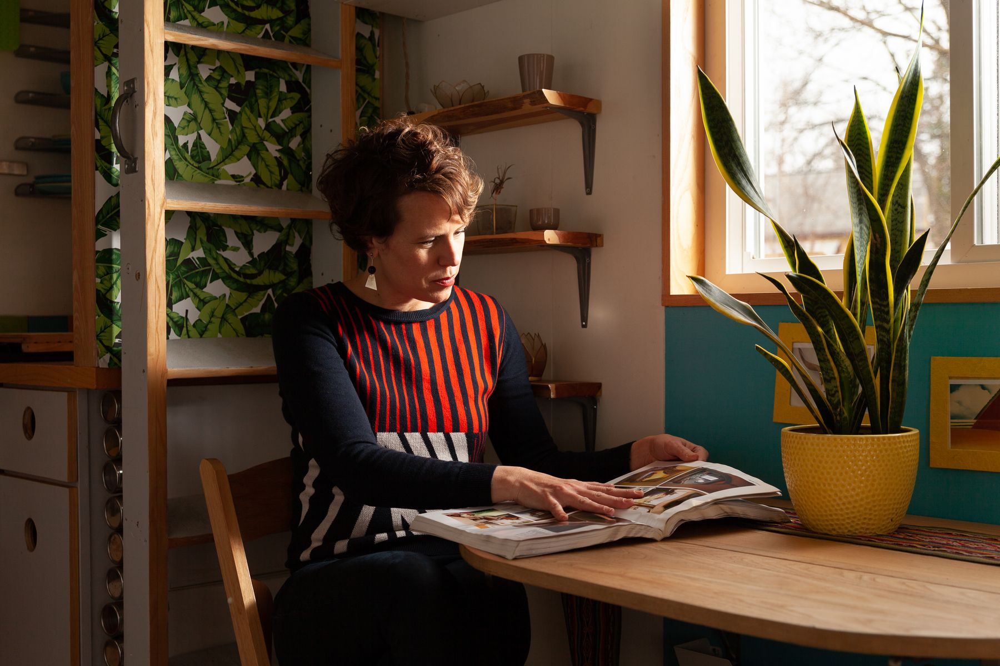

Lee Pera
Geographer • Participatory Systems Designer
I build first-of-their-kind projects at the intersection of technology, land, and community

Practice
The same question runs through all of my work:
How do we build systems that help us stay connected to land and each other, and remember our responsibility to this Earth?
My work has spanned emerging technology, geospatial systems and mapping, alternative housing, and community building.
I’ve helped launch the federal government’s first SaaS geospatial platform, led participatory mapping initiatives in multiple countries, built the nation’s first urban tiny home community, and researched migration and the cultural impacts of mobility.

Current work
Building Beyond
I founded Building Beyond, an interactive, narrative platform where seekers, wisdom keepers, and communities come together to share knowledge and design new paths forward.
A bridge between generations, ways of knowing, and the worlds we are building together
Explore Building BeyondWhat does a geographer do?
I study the “why of where” and how relationships between people, place, culture, and power shape the world around us
I grew up between countries and cultures, which taught me early in life that people experience the world through very different maps of reality. That eventually led me to geography.
I am just as comfortable traveling for days on rivers to map environmental resources with rural communities as I am speaking in front of thousands of people at festivals, or presenting to senior leadership in government agencies.
In recent years, I’ve intentionally revisited places connected to my own history and ancestry. I’ve learned about community governance of water systems in Mexico, worked the reindeer roundup in my grandparents’ homeland of Sápmi, and connected with friends in the Pacific Islands around oral histories of climate adaptation.
Those experiences continue to shape how I think about technology, stewardship, and the kinds of connections and systems we need for a rapidly changing world.
I believe the future will require much more than innovation alone. It will require:
- Memory
- Stewardship
- Relational intelligence
- And new ways of building together and being together on Earth
Newsletter
Legacy Code
Maintaining the code our ancestors left running
Legacy Code is where I write about what it takes to build community-owned systems like local AI, game worlds and hand-built homes, and the unseen work most builders skip.
Read Legacy CodeSpeaking
Topics I speak on include:
- AI, relational intelligence & cultural memory
- participatory systems, governance & community-owned technology
- tiny homes & alternative community models
- ancestral knowledge & future-building
Past speaking has included: conferences, keynotes, workshops, podcasts and community gatherings.
Inquire About Speaking